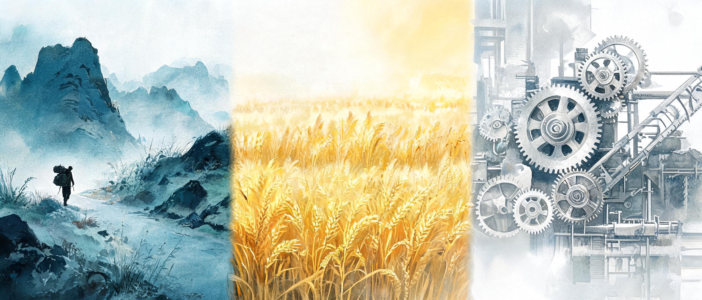

豆摇峰 · 第十一期
巫师独自前行
从游牧到流水线 — 每个人都在 AI 时代搭好自己的洞穴
信息系统、节奏、Taste —— 一场跨越疲惫与远方的复盘
2026.05.18 · 白豆 · 摇摇 · 李墨玩
— 本期做客嘉宾 · Wendy —
SCROLL
Chapter 01
开拓性业务的疲惫
本期会议开场，白豆抛出一个被工作磨得很真实的感叹：
「做开拓性的业务确实非常的耗人 — 对盈利模式还有一个稳定的产出，真的太疲惫了。主要是有一些人事的安排，我感觉有时候分配过来的人力让我去教他们，还不如我自己干。」
— 白豆
这一类抱怨在新点群里反复出现过。李墨玩接住了这个话头：
「你主要是教过程比较耗费时间。但是如果别人真的搞起来之后 — 别人的 KPI 是算到你的头上的，对你自己来讲是有很大帮助的，这个时间还是挺值得去花的。」
— 李墨玩
但李墨玩补了一刀关于"什么人值得带"的判断标准 — 能力不行、态度好可以；态度不好、能力还不行，可以开。
白豆紧接着讲到今天公司开的一个升迁/复盘的沟通会上的暗流：
「真的能感觉到人事的剑拔弩张，都隐藏在里面。可能因为老板不在，我之前那个上司表面上他会先叠很多甲 —『我这话我这人说话就这样并不是反对大家什么的』— 然后就会提出来很多个疑问，其实有的并不是问题，是一种因缘关系。」
— 白豆
李墨玩很冷静地一句话总结了原因："挺正常的，因为你影响到人家的利益。"
这一章其实是本期所有讨论的暗线 — 当一个人开始往新的方向走，既要面对开拓的疲惫，也要面对原有秩序的反弹。剩下能怎么办？正好接下来的几章里大家轮流给出了自己的答案。
· · ·
Chapter 02
一位朋友的"老师 IP"
白豆这周和一位老师朋友聊天，对方原本在一家头部教培公司做名师，组里"三王一后"中的"后"，后来出来自己干，做得风生水起。
白豆讲他从对方身上看到的东西，并不是"她做对了什么项目"，而是更本质的一件事：
「她出来做也是被当时的领导穿了小鞋。但她出来之后特别顺 — 因为所有的学生都是跟着老师走的，而不是跟着平台走的。所以她出来的时候，能够做很多的积累。
哪怕一些管理、用 AI 工具优化流程这些事她没做那么好，也没有太大影响 — 因为别人可以帮她完成这件事。但核心的个人影响力这一方面，她做的很好，而且持续输出。」
— 白豆
更让白豆有触动的，是这位朋友在跟他聊到 CRM 系统的时候 — 她公司用的是某教培行业的竞品 SaaS，一年两万。白豆顺势展示了一下自己用飞书搭的 CRM（之前还拿过奖），对方反应是："看起来比她们用的还好用一些。"
摇
这就是你之前各种实践的一次又一次证明 — 你之前做的很多东西，拿出来都是很惊艳的。自己多多分享。
白豆抓住的不只是"我以前做的东西可以变现"，更是 — 一个长期累积的个人 IP（无论是『老师』还是『某种工具的搭建者』），它的复利来自于"被记住"，不来自于"换平台"。
· · ·
Chapter 03
从游牧到流水线 — 一种关于信息的文明史

游牧 → 农耕 → 工业化 — 三种处理信息的姿态
白豆这周读到的最让他兴奋的一篇文章，来自一位长期低调写作的独立创作者 — 这个人 2017 年前后就开始系统地写"个人信息管理系统"。他和少数派前编辑一起做了一个独立网站，"一个人相当于两个全职编辑的产能"。
白豆顺手用 manus 搜了他的 GitHub 和文章，他甚至同时是国内一线的律师：
「他提到的一件事很有意思 — 他在这些平台上的发文收入，相对他的主业来说基本可以忽略不计。」
— 白豆
这位创作者最打动白豆的，是他对"信息管理"做的一个文明史式的隐喻：
游牧式 — 用了即弃
"我们在豆包、DeepSeek 这种 chatbox 里随便聊一段、用完就扔 — 这个层级是游牧式的，没有任何系统沉淀下来。"
农耕式 — 必须亲手整理
"农耕式这一步是必须亲自完成的。" 自动化一个流程之前必须先手动 — 你要知道这个过程中发生了什么。如果自己没有一个清楚的体系或者架构，有再多的自动化工具也好、AI 工具也好，其实都不会加速这个过程。
工业化流水线 — 多 Agent 协同
"农耕的框架搭起来之后，就开始引入一些自动化工具 — 文件重命名、自动化分类，再往上一层就成了多 agent 的协同。"
白豆顺势把这个三阶段总结放进了今天公司内部的 AI 大会分享 — 反响很好。他自己分析："今天分享的效果，越来越自如了。也有可能是自己真的尝试过这些事情，然后其他人有一个信息差在这。"
「因为你可能每天都在琢磨、在用这个。」
— 李墨玩
这一段的精神底色和上一期"唱跳 Rap 都得会一点"完全一致 — 真正稀缺的不是工具的使用方法，是"亲手把一件事走过一遍"留下的判断力。
· · ·
Chapter 04
浏览器作为 Token 持有者
白豆顺手分享了一个他这周新打通的付费文章下载工作流 — 把一整个付费专栏导入到 Heptabase 的思路。
核心痛点：付费文章直接破解很麻烦；但浏览器已经登录账号了，这就是"天然持有 token 的客户端"。
SinglePage 下载当前页面
点一下就能把当前付费页面整体存为 HTML — 浏览器是登录态，所以付费内容就被合法地"渲染"进来了。
用 Pokemon 插件爬目录页所有链接
"那个宝可梦插件之前拼图墙的时候也跟大家分享过 — 点一下就能爬到目录页所有文章链接。"
把链接列表转 HTML 收藏夹
关键一步 — 链接列表不能批量打开，但浏览器的 "打开整个收藏夹文件夹" 可以。让 AI 把 CSV 链接写成一个 HTML 收藏夹文件，导入浏览器收藏夹，一键全部打开。
用快捷键调起 SinglePage 批量保存
"打开了之后我只需要用快捷键、下载、关闭，基本上不用动光标 — 这个确定性还是很高的。"
Cloud + MCP 自动入库 Heptabase
"下载到本地之后让 Cloud 再去处理一下，调用 Heptabase 的 MCP 直接批量上传就行。"
白豆把这个工作流问 AI 总结了一下，回来一个特别贴切的描述：
「最核心的就是『浏览器作为 token 持有者』— 这是可复用的资产。最关键的是『对约束位置的精确识别』。」
— Cloud（总结白豆的思路）
白豆补了一句很克制的话 — 这件事完全可以再用 Keyboard Maestro 把"快捷键操作"也自动化，但他这次没做："因为太复杂了，所以没必要。这件事其实没有那么多次数。" — 和上一章"农耕式必须亲手"是同一个判断逻辑。
· · ·
Chapter 05
狭路相逢 — 比间歇复习更好的方式
这一章由摇摇的一个问题引出 — 她过去试过用文件管理代替软件笔记的方式，最后失败了：
「我之前在一个文献软件里给它打标签，但是这样子会让标签发生膨胀，到了后来之后我就管理不动了 — 因为我会忘记我到底给它加了什么标签。
一个文章可能有 10 个点，你当时关注的是三个点，但你后来想起它的时候，是想起来其他 7 个里头的某一个 — 然后你就错过了你打的那三个标签。」
— 摇摇
白豆引用那位独立创作者文章末尾对"标签"的解释 — "标签最后的归宿是思考"。然后分享了对方在"复习"这一节里提到的一个特别有意思的概念：
「狭路相逢 — 你突然就想起了这个东西，或者在学习、工作的时候，突然想起来自己不是很熟，你当下就立马去找一遍、复习一遍。
这有可能比 Anki 这种间歇复习还更好 — 因为间歇复习只是你被动地提醒自己，而狭路相逢是根据你生活实践中遇到的频率去复习。」
— 白豆（引述某独立创作者）
白豆还做了个补充观察 — 他自己回忆很多文章/资料，最有效的入口反而是微信聊天记录。"我能想起来跟谁分享了某个东西，然后从那里翻出来。"
摇
这可能就和你最开始说的，你是那种图像化的人一样 — 你能想起来跟谁分享了某个事，找起来就会好找一些。
李墨玩这时候插了一句完全不同的思路 — 他自己最近在用的是"让 AI 用 grep 检索"：
「Cloud Code 它不是去做向量检索，它是让 AI 自己用 grep 一类的命令去做检索 — 根据实际需要生成关键词。
如果你把内容都在本地分类好，然后建立好一个索引机制，让 AI 这样去检索，我觉得也挺好的。我现在自己搜过去的读书笔记，就是用这个去搜。」
— 李墨玩
三种思路：标签 / 狭路相逢 / 让 AI 用 grep 自由检索 — 谁都没有终极答案，但三种都还在试。
· · ·
Chapter 06
110 小时与古德哈特陷阱
摇摇这周开场就汇报了一个数字 — 这周加班 110 多个小时，调休时间早就满了（公司规定上限 32 小时调休）。
但这次她没去抱怨累，她在反思一件更有意思的事情：
「这一周做出来什么吗？我觉得也没做出来什么。感觉很多时间不知道去哪了，反正它没有落到实处。把杀时间当成一种追求、当成结果的话，好像有点错位了。
这个叫古德哈特定律 — 你加班时长肯定是你追求一个更好效果的时候付出的；但你把『加班时长』作为评价标准的话，那就跑偏了。」
— 摇摇
她还讲了一个最近刷到的小观察 — 关于"兴趣"：
「现在很多人把兴趣后面都加一个『但是』 —『我打羽毛球，但是打得不好』。兴趣本身就是为了让人高兴、让人感觉到有趣的事情，本身就已经很难得了。如果你还要在这件事情上加上一个标准 — 那你就想要的太多了。
是一点一点的去做，然后你喜欢就去做。而不是说因为你做了它变得很厉害，你才去做它。」
— 摇摇
这一段和上一期摇摇说的"兴趣本身就是结果"是一根线下来的 — 但这次她明显走得更远了一步：兴趣不需要加标准，时间也不需要加标准 — 加什么标准都会把它跑偏。
· · ·
Chapter 07
慢下来的快乐 — 一只乌龟，一个衣柜，一场《情书》

把"想要"换成"长出来" — 等待本身就是回报
摇摇这周做了一件让她特别快乐的事 — 她买了一只乌龟，开始做生态缸。
「我之前其实特别喜欢养那些小花小草，但是我养不好，又觉得快乐 — 可是养不好这件事情让我觉得很痛苦。然后我就买了一个乌龟 — 基于这个龟缸就可以做各种各样的生态缸，像小景一样。
我买了一块这么大的石头，可以放到龟缸里头，往上面铺这些小苔藓。还买了一些前后错落的水培绿植和定植篮。按照我目前的设想和想象，它会很好看 — 我不知道会不会好看，等时候有了结果给大家分享一下。」
— 摇摇
除了乌龟，还有两件让她"很享受"的小事：
按颜色分类衣柜
"我这个周末周日下午不知道该干嘛了，也不想干活，就去收它。我觉得收纳和做家务有一种独特的快乐。"
看了一部叫《阿玛》的电影哭了
"其实是相对比较简单的电影，但是感情真的流露的太自然、太真挚了。我回来还跟李墨玩说，看哭了 — 觉得很多事情它是自然而然的发生的，不能太刻意、太戏剧化 — 普通人的生活追求一个朴实和干净就好了。"
她还提到了《阿甘正传》里阿甘他妈说的那句话 — 没具体引述，但意思都到了。
临到结尾，她讲了一个最值得记的"课题分离"概念：
「我之前有很多次提到 — 我在工作的时候老想着玩；出去玩的时候又觉得工作被耽误了。这些事情互相交织，让我觉得缠得我喘不过气来。
这样是不对的 — 它们应该分成不同的课题，分成不同的文件夹去管理，它们之间是要隔离的。目前还没做好，应该慢慢去尝试。
反正这周玩得很开心 — 可能就是年纪到了，想开了。30 了。」
— 摇摇
· · ·
Chapter 08
当局者迷，旁观者清 — 让子 Agent 替你看代码
李墨玩这周的关键词是"忙不过来" — 他同时在做小程序、之前的群聊日报项目优化迭代、好几条产品线一起跑。
「我一直让 AI 写代码，但我审核不过来。我怕它搞错 — 你得去看它改对没有，得测试。虽然 Git 有自动化测试，但很多时候涉及 UI 还是需要自己去看一下、把关一下。」
— 李墨玩
他这周做了一个 skill，写进了 Cloud Markdown / Codex Agents 共用的全局指令里：
让主 Agent 创建一个子 Agent 做审核
"让 AI 创建一个子 agent 去帮我做一些审核 — 它不跟主 agent 共用上下文，会用一个干净的上下文。"
为什么要干净上下文？因为当局者迷
"我怕主 agent 的上下文会有一些污染。之前我跟白豆聊天提到 — 当局者迷，旁观者清。这个放在 agent 上面也可以适用。"
跨 Host 同步指令
"Cloud Markdown 和 Codex 的 agents.md 我是同步更新的 — 我在里面写一条指令，两个都会一起改，skill 也都是共用的。"
他顺势抛出了今年自己一直在琢磨的更大命题 — "AI Native 组织"：
「Cloud Code 团队有一篇文章 — 以前改一个功能你要测试、前后端协同，一个项目周期可能几个星期；现在有了 AI 之后，可能变成几天。
所以现在的开发范式会有一个很大的变化。用传统开发模式去跟 AI 协作，你肯定会很辛苦 — 怎么把 AI 融入到自己的工作流、在组织里建构起 AI First，是值得琢磨的事情。」
— 李墨玩
· · ·
Chapter 09
OpenAI 的招聘构成 — 驻场是新外包
摇摇拉了一张她从 OpenAI 招聘页爬的图（按职能分块）— 她说让人意外的是：
「这些 AI 公司，他们都在让别人用 AI 减少人力成本 — 但他们自己的公司招人还扩张得挺猛的。」
— 李墨玩
三人对着图盘了一下三大招聘方向：
李墨玩对 FTE 这条线做了一个特别精准的对比：
「这其实就是以前那种外包 — 但跟传统外包不太一样。以前外包是把无价值的事情外包出去；现在驻场是因为很多企业要做 AI 落地，但是他们不懂。
你作为一个有 AI 上下文的人，到公司现场去『加载』他们的上下文 — 这是一个挺有意思的方向。」
— 李墨玩
白豆顺手举了一个具体例子 — 如果让他去前面那位老师朋友的公司驻场一个月，可以解决很多问题。
李
但国内 TOB 是挺难做的 — 因为公司多、每个都要做定制化。飞书做到现在还是亏的、还是不赚钱。
摇
好多老板就是 — 你跟他说"买个飞书吧"，他说"你自己搓一个吧"。
李
特别是国企央企，他们都会自己研发，而且他们也不需要追求很高的效率 — 使用的人跟采购的人是分离的。
· · ·
Chapter 10
小模型崛起 + 微信 Agent 的推迟
本期里关于行业的最有信息量的一段，来自李墨玩对腾讯财报会和微信 Agent 进度的回看：
「腾讯最近的财报会上提到，微信 Agent 要推迟开发。一方面是商业模式没有想好，另一方面是性能问题 — 据我所知，他们打算用混元，但混元的工具调用、Function Call 成功率是很低的。
他们最近的重点放在了 WorkBuddy — 想做的是更多落地在 TOB 的一些场景，因为这个东西是能赚钱的。」
— 李墨玩
他把这一切放回到 AI 行业经济学的本质里：
「AI 这一波产品跟过去的互联网产品的逻辑不一样 — 每增加一个用户，它都是有成本的。
不像互联网，用户每增加，边际成本就越来越少、有网络效应。你看豆包不是最近都说不再追求 DAU 的增长了吗 — 因为他不赚钱、追求 DAU 的成本没有意义。」
— 李墨玩
顺着这个逻辑，李墨玩抛出了一个未来 2 年值得押注的方向：
「过两年，肯定你会看到很多的小模型崛起 — 这个我觉得是肯定的，而且这是有机会的。这个未来的小模型能干些什么 — 这是我最近在琢磨的一个事情。」
— 李墨玩
摇摇做了一个非常具体的佐证 — 她在公司搭企业级智库时，"前端切片和分层处理都用的是本地的小模型，可能都不用 7B，3.5B 就可以了"。理由是：成本低 + 数据不外泄。
另一个李墨玩补的小例子 — 谷歌最近出了可以在手机上跑的大模型，"明明年或者后年，我觉得这会变成一个比较主流的叙事。"
· · ·
Chapter 11
王建硕：代码也成了"汇编"
白豆这周读到的最有冲击力的一篇短文，来自王建硕。文章里他做了一个非常大胆的比喻：
「旧世界：C 语言其实就是搭在汇编语言上面的 — 汇编那种 0101 太复杂、又看不懂、又不可维护，一改到处是 bug。但人已经不需要再下到这个层级去改这个汇编语言了 — 只需要用 C 这种高级编程语言去操控。
新世界：现在 Python 这些代码也会成为类似汇编语言的存在。更高级的语言出现了 — 就是自然语言。编译结果不对，可能就是我们的需求没说对。」
— 白豆（转述王建硕）
李墨玩立刻举了一个反例修正这个隐喻 — 他自己是自动化专业出身：
「其实他说的也不完全对 — 你做底层的东西，比如单片机、洗衣机微电脑、华为的很多底层芯片，内存就几 KB 到几百 KB，就必须要用汇编去写。像华为这些公司，懂汇编的程序员是非常值钱的 — 因为汇编特别难学。
不管你用什么语言写，最后都要编译成汇编或者更底层的东西给计算机执行 — 汇编不可或缺。」
— 李墨玩
他又顺着这个话题讲了一个圈内的有意思的视角 — Rust 程序员瞧不起 Python 程序员：
「Rust 写出来的项目 — Python 可能要 100 MB，它可能只要 20 MB 就搞定，代码包特别优雅。所以很多老程序员就特别看不起 Python。
但 Python 在深度学习、在 AI 这个领域又特别重要 — 因为它有很多模块、导入一个包就可以直接调用，不用老是自己开发。」
— 李墨玩
所以"代码即汇编"这个比喻不是不对，是"分层" — 每一层都有它最适合的那种语言，只是上层会被新的工具不断推上去。
· · ·
Chapter 12
Wendy 做客 · Taste 是最后的护城河
Wendy 这次做客是带着一个非常真实的处境来的 — 她上周刚从一家公司离职，正在思考 AI 对她这个行业（艺术 / 设计 / UI）的冲击。
「最近有很多人在做 AI 生成的 UI、生成 APP — 所以对我们设计类这个行业，冲击是蛮大的。
我突然觉得很有信心的是 — 上周三跟白豆聊完之后，他给我举了很多 AI Agent 生成的例子，我发现人和 AI 的区别不在于技能上，而是说在对它的调控和管理 — 包括作为艺术生来说，对审美的把关。
不管 Agent 生成一个什么样的 UI — 最后比如你想生成一个比较好的 APP，都需要一个有审美的 UI Designer 去把关。在这个博弈过程中，最后是人类会胜利 — 取决于你怎么去操控它、怎么去驾驭它。」
— Wendy
她讲到一个更尖锐的反直觉判断 — marketing 可能比 design 更容易被 AI 取代：
「marketing 除了非常高层的 strategy 部分（一年做几个 campaign、跟谁合作、主题是什么），其他全部都是承接 strategy 之后的执行端 — 它本质就是 communication。
跟 KOL 沟通、做预算（套模板）、联系厂商供应商对接 — 这些都可以给 Agent 去做、直接同步进行。
站在 design 的角度反而至少需要一个审美的判断 — 这个落地的效果是不是符合市面的需求、是不是好看、有没有高级感。这个还是需要人去做判断的。」
— Wendy
摇摇当场就给出了一个完美的佐证 — 她最近读的一本叫《超级 AI 组织》的书，里面举的霸王茶姬泰国营销的案例：
「霸王茶姬在泰国的营销活动 — 完全是营销智能体锁定 KOL，根据预设规则做深度筛选，实时追踪 KOL 发布内容后的热度变化，再来迭代筛选。Wendy 这个判断很准确，确实有实力在做这些事情。」
— 摇摇
李墨玩追加了一个更普世的判断 — 对所有"被工具抬高底线"的行业都通用：
「AI 可以快速抹平 — 你跟刚毕业的人、跟工作 2、3 年的人的水平拉到差不多。但你跟工作 5、6 年的人，还是差一个 Taste。这个在未来会越来越重要。」
— 李墨玩
Wendy 给自己定下了一个 buffer — 拒了 marketing 的 offer，给自己三个月时间，重新想清楚未来怎么和 AI 协作。
· · ·
Chapter 13
打败不了 AI，就把自己喂给它
摇摇给 Wendy 提了一个非常具体、可立即操作的建议 — 黄仁勋那句话的延伸：
「AI 不会替代你，但是会用 AI 的人会替代你。
你可以基于你的思考、结合你的品位，利用 AI 放大你的能力。把你的能力底座、过往作品集、过往经验都告诉 AI — 然后告诉它 "在 AI 时代你可以做什么"，跟它做一些交互，看看他会有什么帮助。
白豆之前也做过类似的事情 — 让 AI 评判他、把自己做的一些文章发给它。」
— 摇摇
Wendy 接得很俏皮 — "那我就要问他：以我现在的能力，我要如何才能打败你们 AI？"
Wendy 顺势讲了一个更深的判断 — 未来不同档位的客户会被分开：
「未来追求高效的设计，target 可能是比较低价的东西 — 因为它不需要设计，只需要功能性。
但所有有 Taste 的东西，不管是产品还是艺术，它的 target 是会为 Taste 花钱的人 — 中高层的消费者。是不是以后我要做的事情，是针对这类人来做。」
— Wendy
「流水线生产替代了很多商品，但你看那些奢侈品，照样卖的很好。」
— 摇摇
白豆把这个判断收成了一句话："讲故事，以及触动别人感受的能力。"
「Storytelling 很重要 — 包括跟人的沟通、怎么样推销，不管推销自己还是推销产品。画饼这件事情在这个时代尤为重要。」
— Wendy
· · ·
Chapter 14
本期启示
01
教别人是把别人的 KPI 算到自己头上
"教过程比较耗费时间，但如果别人真的搞起来之后，对你自己来讲是有很大帮助的 — 这个时间还是挺值得花的。"
02
老师 IP 的复利
学生跟着老师走，不跟平台走。出来做自己的人，靠的不是新的工具，而是过去几年"被记住"的那批人。
03
从游牧到农耕到流水线
自动化之前必须先手动。没有亲手走过一遍的农耕，就算挂上再多自动化工具也没用 — 你不知道哪里该自动化、哪里该克制。
04
浏览器是天然的 Token 持有者
付费内容、登录态、cookie — 浏览器是合法持有这些"凭证"的客户端。利用它做工作流，比硬破解优雅得多。
05
狭路相逢 > 间歇复习
主动等到自己"需要"的时候去找一次，比 Anki 推到你脸上的复习更牢。频率不要靠算法，靠生活本身。
06
古德哈特陷阱：时间不是结果
110 小时加班不等于产出。一旦"加班时长"成为评价标准，行为就开始为标准服务，而不是为目标服务。
07
兴趣不需要加标准
"兴趣 + 但是" 是个陷阱 — 让人高兴的事情本身就足够了。30 岁想开的一件事：不要再给本来快乐的东西加上一个评分。
08
当局者迷，旁观者清
多 Agent 协同的核心不是模型有多强，是"上下文要分干净" — 让一个不带情感的子 Agent 去审你写的代码。
09
驻场 = 加载上下文
新一代"驻场"不是承包琐事，而是把 AI 的上下文带进企业。OpenAI FTE 的爆发是这一波最被低估的招聘信号。
10
小模型崛起 + TOB 回归
每个用户都有边际成本的产品，DAU 不是答案。本地 3.5B 小模型 + 行业落地，才是接下来 2 年的主旋律。
11
marketing 比 design 更危险
communication 容易给 AI 做，taste 不容易。霸王茶姬的营销智能体已经实证 — 而设计的"那一刀拍板"还需要人。
12
把 Taste 喂给 AI，问它怎么打败你
打败不了就协作。把你的能力底座、作品集都告诉 AI，让它告诉你 — 你现在最稀缺的那一寸长板在哪里。
· · ·
Epilogue
巫师独自前行
"伟大的巫师总是独自前行，只要空气里的元素依然回应他的召唤。"
本期最被白豆引用最多次的一句话，来自他这周读的那位独立创作者的文章 — 关于"如何把一篇文章压缩成一个可被引用的钻石"：
「伟大的巫师总是独自前行，只要空气里的元素依然回应他的召唤。」
— 白豆（引述）
白豆补了一句 — "每一篇文章的标题都是一个 API。有时候我们不需要打开这个黑箱去看它具体是什么样，而是直接引用个标题就行。" 一篇文章成为 API，一句话成为意象，一个人的几年累积成为他自己的库。
临到散场，Wendy 给三个人一个外部视角的反馈：
「你们每周都做了非常多的事情。我很难想象现在已经在上班了，每周还可以 side work 到这种程度。你们很神奇 — 怎么会每周都有进展，这也太厉害了。
而且我能感受到 — 你们是很认真的在经营自己的生活和经营自己的进步的。这一点很重要，能够在你们给我传达的时候感受到那份力量。」
— Wendy
白
有时候因为要开一个会 — 如果完全没有任何进展，都不好意思来。
W
这就是 weekly 的作用 — 每周要开周会，就是因为你必须要整点什么能展示的东西出来。
Wendy 抛出了一个让三个人都笑了的好奇 — "你们三个没有想过合作搞一点什么事情吗？我看你们每一周都在 Weekly。"
「我们今年想把这个复盘的东西往外推一推 — 所以才会有做客这件事情。这是我们今年衍生出来的。」
— 李墨玩
那我们今天到这 — 朋友们早点休息。
— 白豆 × 摇摇 × 李墨玩 × Wendy，散场时